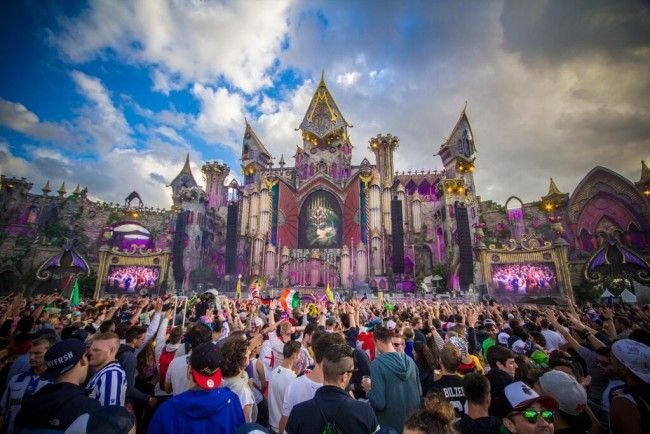
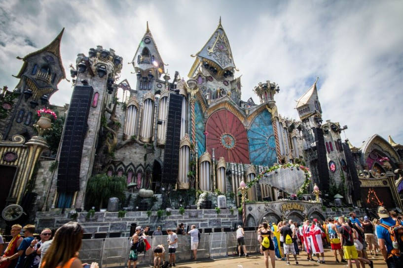
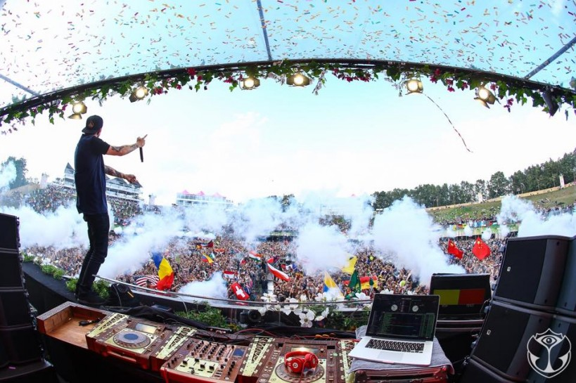
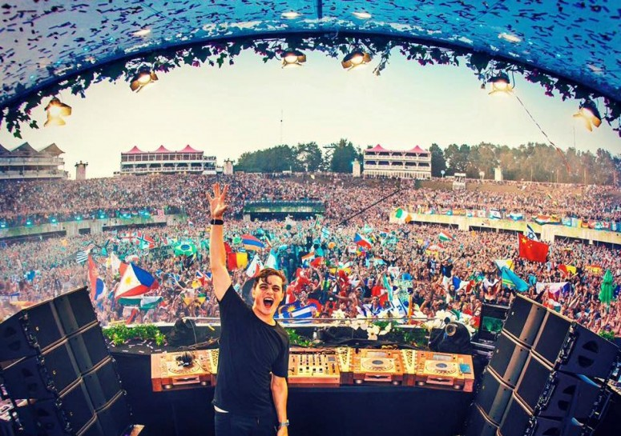
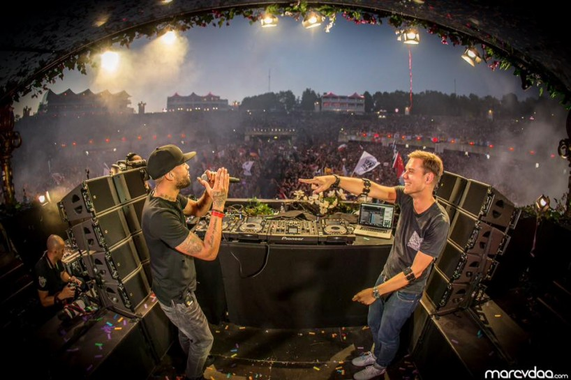
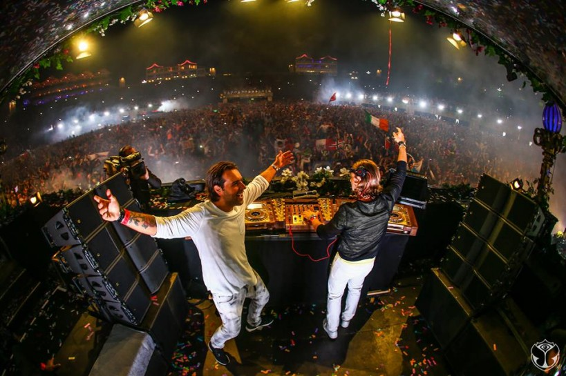

5 Moments That Blew Up Tomorrowland’s Main Stage on Saturday
{kind=link}

While there’s a wealth of stages to choose from at Tomorrowland, the charged atmosphere of the central amphitheater is unrivaled. Saturday represents the peak of the main stage spectacle, with the expansive dancefloor, viewing decks and hill all tightly packed with bodies and waving flags. Here’s five galvanizing moments we witnessed on Saturday, from the very first set through to the explosive finale.
{kind=link}

MARTIN SOLVEIG’S DAYBREAK SESSION
This year, the main stage opens each day with an extended warm-up set from a big name DJ. On Saturday, it was French house ambassador Martin Solveig who stepped up for the noon slot, drawing a dedicated crowd despite the persistent rain.
In the early afternoon, the main stage atmosphere is dramatically different from the overwhelming spectacle after dark, and Solveig handled the warm-up brief with signature enthusiasm. Setting aside the blockbuster EDM hits, he focused instead on the bright, effervescent house music that made his name. For the fans dancing in ponchos, the set was a welcome dose of summer vibes.
{kind=link}

DILLON FRANCIS BRINGING THE BASS
On a Saturday main stage schedule dominated by European main stage regulars like Armin van Buuren and Martin Garrix, Dillon Francis was a rare US rep. (Fellow LA resident Deorro also did his thing earlier in the day.)
As the DJ declared on Twitter ahead of his 6:30pm set, he was coming to the main stage with a moombahton mission, and the amphitheater was on-side from the first shuddering drop. Dillon’s rapid-fire selections included a few of his latest productions, including a collaboration with bass superstar Skrillex, which sent a whip-crack through the crowd.
{kind=link}

MARTIN GARRIX IN HIS ELEMENT
Martin Garrix hit the main stage after Yves V, and his pulling power was quickly apparent. Garrix’s livewire energy is perfectly matched to Tomorrowland – and unlike many of his contemporaries, he’s actually close in age to most of the crowd.
It was only a few weeks ago that Garrix revealed his remix of The Weeknd’s “Can’t Feel My Face,” and while the track is still awaiting an official release, it represented the moment that the main stage really started to accelerate, as every corner of the vast amphitheater filled up with chanting, hyped-up fans.
{kind=link}

ARMIN VAN BUUREN’S TEAM-UP WITH AN ELECTRONIC ICON
With the sun having set over the De Schorre amphitheater, Dutch trance powerhouse Armin van Buuren was already half an hour into a typically polished mainstage set when he took a moment to introduce a special surprise.
“Who’s ready for some new music?” he asked. “This is the world premiere from a man I’ve admired since I was a little kid.” The track in question was “Stardust,” a track produced by Armin in collaboration with French electronic music pioneer Jean-Michel Jarre, a commanding figure who has recently returned to the spotlight with a series of studio collabs with the likes of Gesaffelstein and M83.
“Stardust” sees Armin’s classic uplifting trance sound fused with a signature Jean-Michel Jarre composition; recalling a halcyon era of electronic music also populated by synth pioneers like Tangerine Dream. It was of course welcomed into the world with the pyrotechnics of the Tomorrowland mainstage working overtime.
{kind=link}

AXWELL Λ INGROSSO’S ALL-OUT CLOSING BLITZ
Axwell and Sebastian Ingrosso’s closing set on Saturday night kept the energy redlining after Dimitri Vegas & Like Mike, with a selection of new tracks seemingly custom-built for the euphoria of the Tomorrowland mainstage at its peak.
The duo’s upcoming record with Pharrell, “Dream Bigger,” was given a workout during the final hour of Saturday night, its driving electro-house vibes offering a welcome change-up from the parade of singalong vocals.
The final stretch also saw one of the main stage’s genuinely impressive gimmicks activated, as tiny lights on every wristband pulsed in time to the music. The sight of a vast amphitheater illuminated by thousands of waving arms is surprisingly hard to feel cynical about.